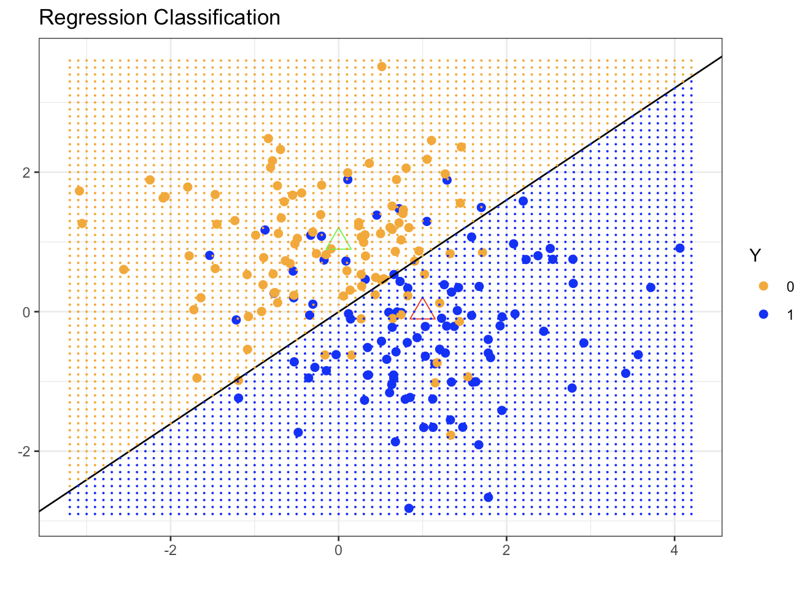
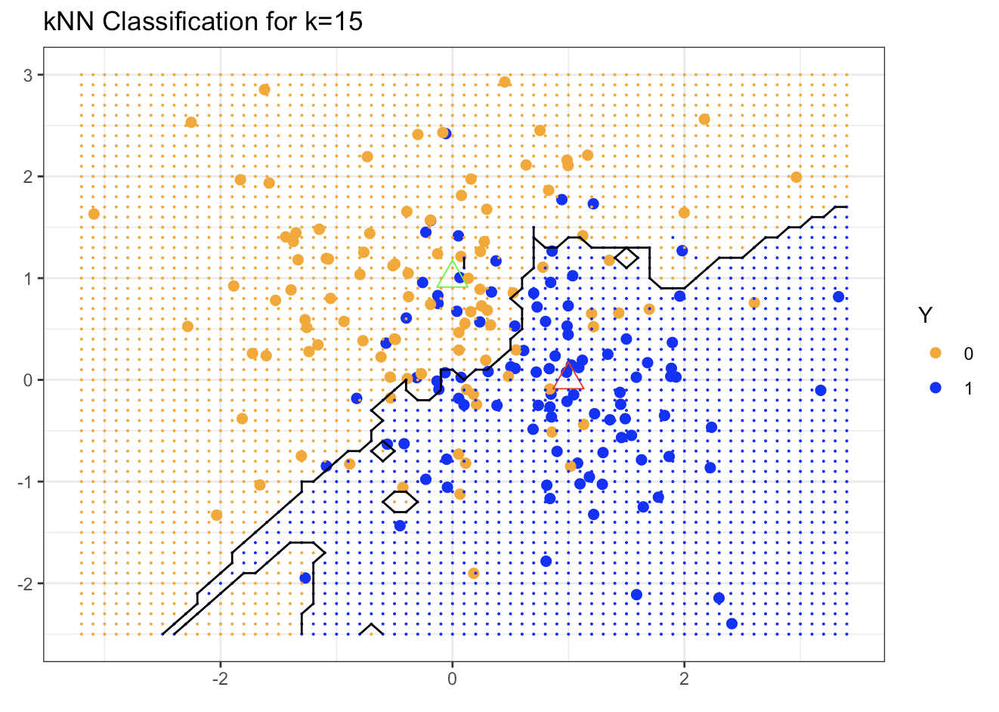
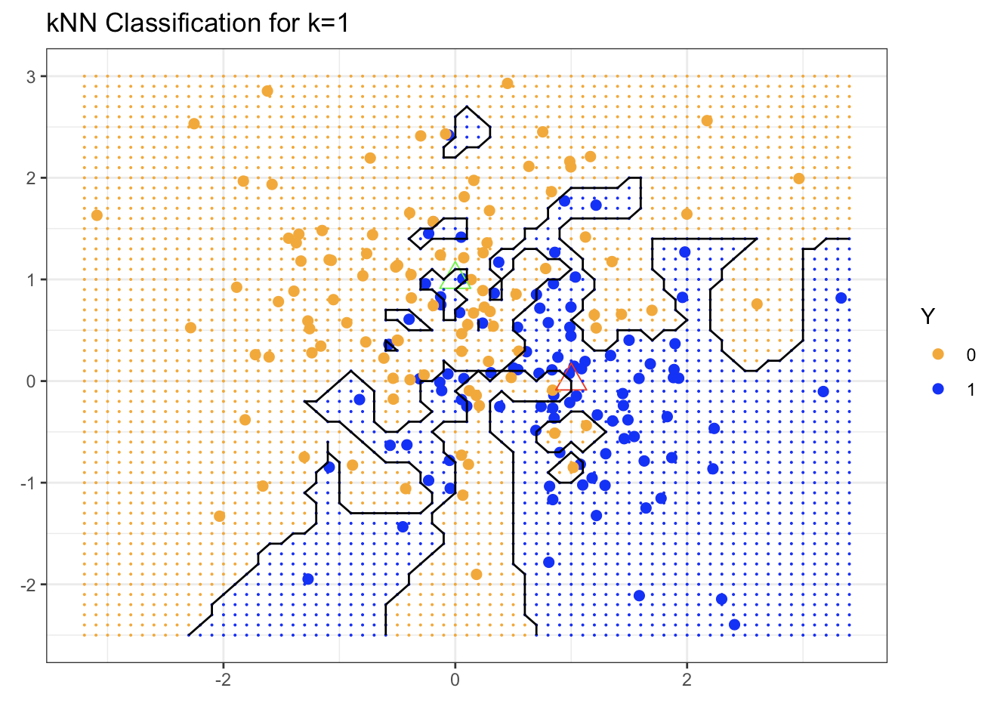
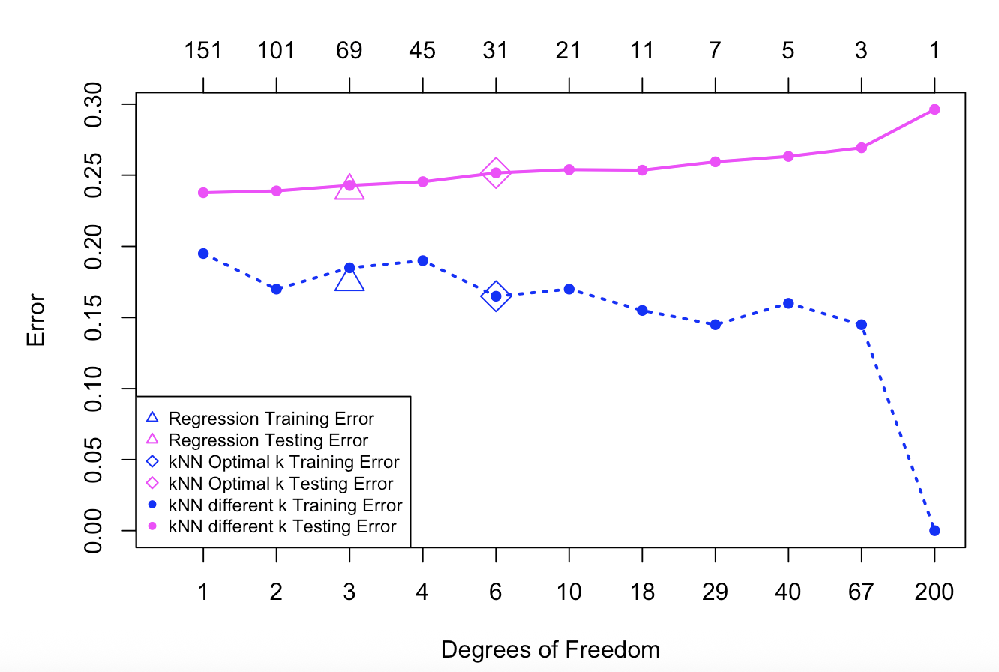

1.5 Two Toy Examples: \(k\)-NN vs. Linear Regression
Before we conclude this introductory chapter, we examine two simple supervised learning methods:
- \(k\)-Nearest Neighbors (\(k\)-NN)
- Linear regression
We will compare their behavior on simple examples and use them to illustrate the bias-variance trade-off.
1.5.1 \(k\)-Nearest Neighbors
In the \(k\)-nearest neighbors (\(k\)-NN) method we predict the response at a point \(\mathbf{x}\) by using the \(k\) training observations that are closest to \(\mathbf{x}\). The \(k\)-NN fit is
\[\hat{\mathbf{y}}(\mathbf{x}) = \frac{1}{k} \sum_{x_i \in N_k(\mathbf{x})} y_i\] where \(N_k(\mathbf{x})\) denotes the neighborhood of \(\mathbf{x}\) consisting of the \(k\) nearest training points.
- In regression, \(\hat{y}(\mathbf{x})\) is a local average of the neighboring responses.
- In classification, \(\hat{y}(\mathbf{x})\) is the majority class (or the class probability) within the neighborhood.
Two practical challenges that arise are choosing the neighborhood size \(k\) and choosing the distance metric that defines the neighborhood.
The value of \(k\) directly controls model complexity, which is roughly proportional to \(n/k\).
- When \(k=1\) the prediction at each training point \(x_i\) is exactly \(y_i\), yielding zero training error.
- When \(k=n\) every neighborhood contains the entire training sample, so the prediction is constant for all \(\mathbf{x}\).
The “default” metric is Euclidean distance
\[d\bigl( \mathbf{x}, \tilde{\mathbf{x}} \bigr) = \sum_{j=1}^{p} w_j \bigl( x_j - \tilde{x}_j \bigr)^2,\] where the weights \(w_j\) may be learned from the data.
1.5.2 Linear Regression
Given an input vector \(\mathbf{x}^\top = (x_1,\dots,x_p)\), we approximate the response by a linear function
\[f(\mathbf{x}) \approx \beta_0 + \sum_{j=1}^{p} x_j \beta_j\]
The coefficients \(\beta_j\) are estimated by ordinary least squares (OLS), i.e., by minimizing the residual sum of squares (objective function)
\[\min_{\beta_0, \ldots, \beta_p} \sum_{i=1}^{n} \Bigl( y_i - \beta_0 - x_{i1}\beta_1 - \ldots - x_{ip} \beta_p \Bigr)^2\]
Under standard conditions the solution has a closed form, and the fitted value at the \(i\)-th observation is
\[\hat{y}_i = \hat{y}(x_i) = x_i^T \hat{\beta}\]
We postpone the algebraic details until Week 2.
Linear Regression in a Classification Setting
Linear regression can also be applied to binary classification problems in which \(Y\in\{0,1\}\). One simply predicts class 1 when the fitted value \(\hat{f}(\mathbf{x})\) exceeds 0.5 and class 0 otherwise.
This approach has well-known drawbacks: the squared-error loss is not a natural measure for binary outcomes, and a linear function can produce fitted values outside the interval \([0,1]\). For these reasons logistic regression is the preferred linear method for classification. It models the log-odds
\[\log \frac{p(\mathbf{x})}{1-p(\mathbf{x}) } \approx \beta_0 + \sum_{j=1}^{p} x_j \beta_j\]
We will return to logistic regression in Week 8.
1.5.3 A Simulated (Binary) Classification Example
Consider a response variable \(G\) that takes two values (0 = BLUE or 1 = ORANGE). We generate 200 observations (100 in each class) and compare linear regression and \(k\)-nearest neighbors as classifiers.
The code used to produce the simulation and all figures is available in R and Python.
Linear Regression Classifier
We first fit a linear regression model, treating the binary response as if it were continuous. The continuous fitted values \(\hat{Y}\) are then converted to class predictions \(\hat{G}\) by the simple rule \[\hat{G} = \begin{cases} & Blue, \text{ if } \hat{Y} > 0.5\\ & Orange, \text{ otherwise } \\ \end{cases} \]
Because the problem is two-dimensional, the decision boundary is a straight line.

The fitted boundary (black line in the figure below) is the set of points satisfying \(\mathbf{x}^\top\hat{\beta} = 0.5\). In the simulation the true blue region lies above this line and the orange region below it. Many points on both sides of the boundary are nevertheless misclassified. The linear decision boundary is smooth but rigid; it cannot adapt to local structure in the data.
\(k\)-Nearest-Neighbor Classifier
We now apply \(k\)-nearest neighbors to the same data. Using \(k=15\), \(\hat{Y}(\mathbf{x})\) is the proportion of blue observations among the 15 nearest neighbors of \(\mathbf{x}\). Class labels are again assigned by the 0.5 threshold:
\[\hat{G} = \begin{cases} & Blue, \text{ if } \hat{Y} > 0.5\\ & Orange,\text{ otherwise } \\ \end{cases} \] (The prediction is therefore a majority vote among the 15 neighbors.)

The resulting decision boundary is far more irregular and follows local clusters of blue and orange points. Consequently the number of misclassifications on the training data is smaller than with linear regression. If we take the extreme case \(k=1\), each point is classified by its single nearest neighbor:

The boundary becomes extremely rough and the training misclassification rate drops nearly to zero. Whether this is desirable, however, can be judged only by examining the generalization error.
Training versus Test Error
Up to this point we have evaluated both methods on the same data that were used to fit them. A method such as 1-NN therefore appears to have zero error. Fair comparison requires an independent test set. The figure below shows misclassification error on a test set of 10,000 observations as a function of model degrees of freedom. Several \(k\)-NN fits (varying \(k\)) are compared with the linear regression fit.

The magenta curve is the test error and the blue curve is the training error of \(k\)-NN. A 5-fold cross-validation procedure selected the optimal \(k\) (marked by a diamond). Linear regression results appear as the magenta and blue triangles at 3 degrees of freedom (the dimension of the fitted linear model). Linear regression has only a few parameters and therefore relatively low variance, but the linearity assumption is restrictive for this problem and produces high bias.
In contrast, \(k\)-NN makes almost no assumption about the shape of the decision boundary (apart from a mild local-smoothness condition). This flexibility yields low bias but high variance; the extreme case \(k=1\) corresponds to roughly \(n\) parameters and severely overfits. It can be shown that \(k\)-NN is consistent when \(k,n\to\infty\) with \(k/n\to 0\). The price of that consistency is the high variance that appears when the effective number of parameters becomes large.